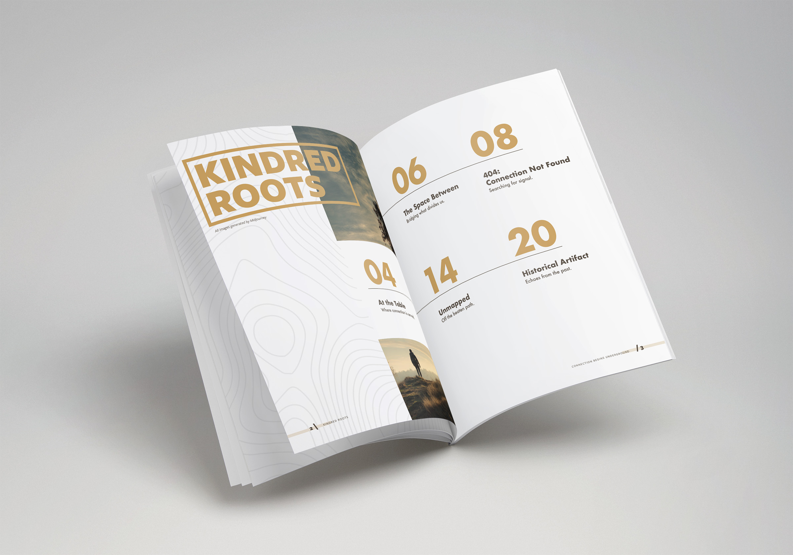
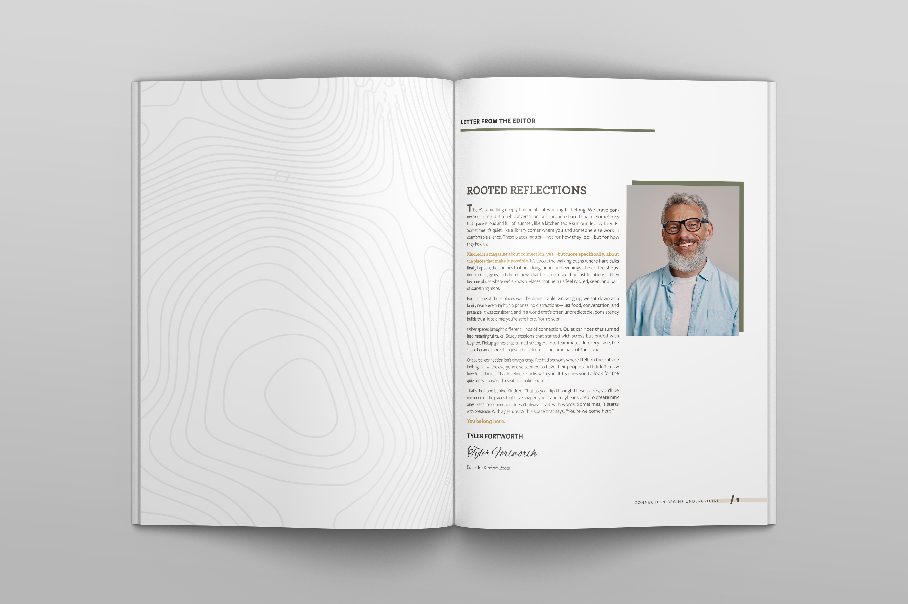
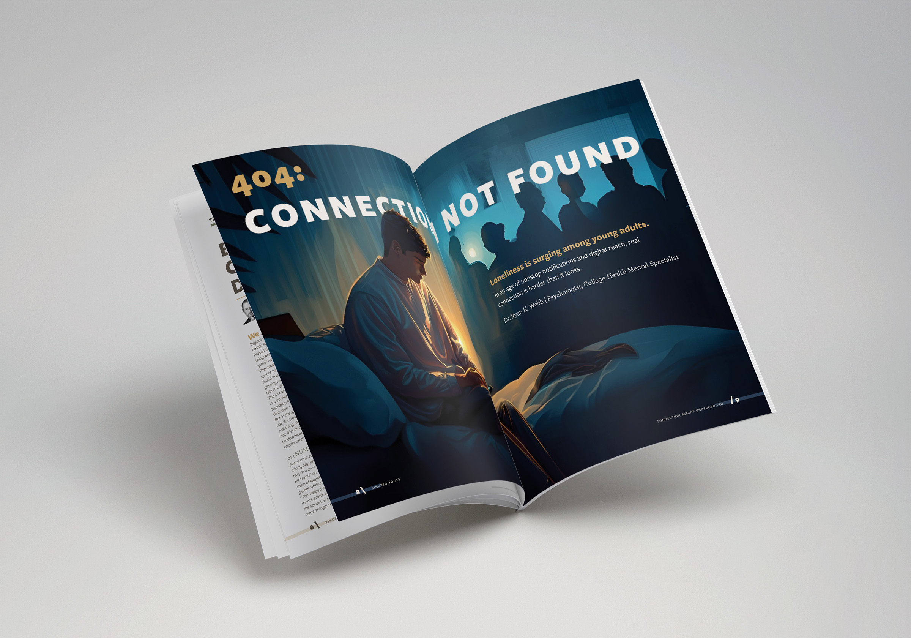
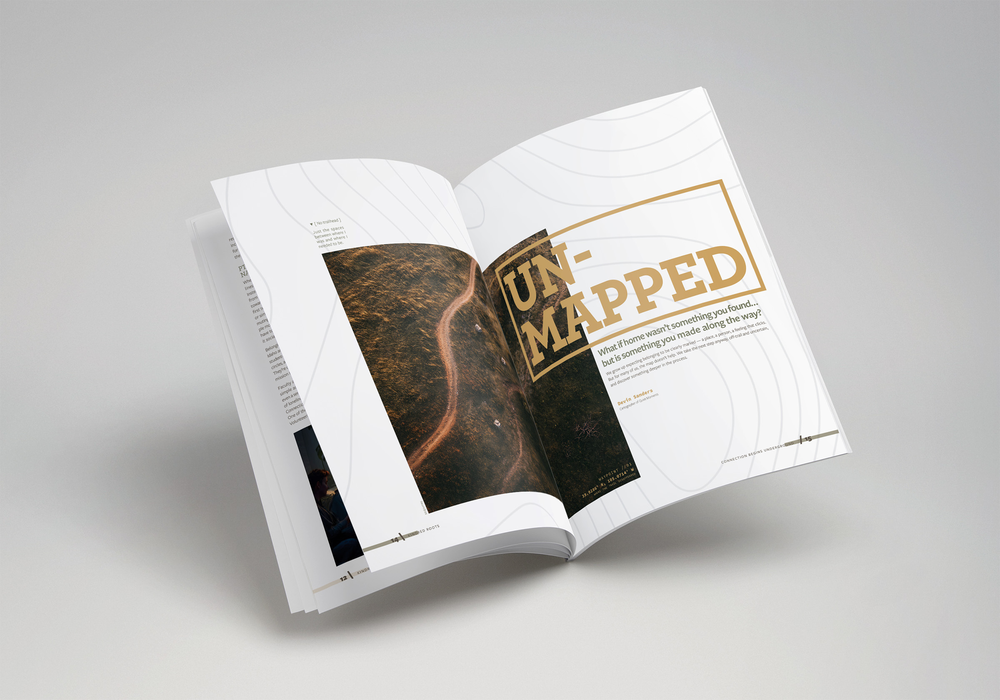
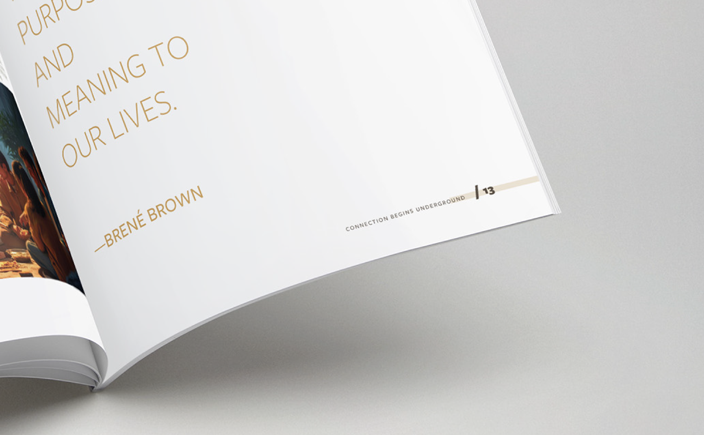
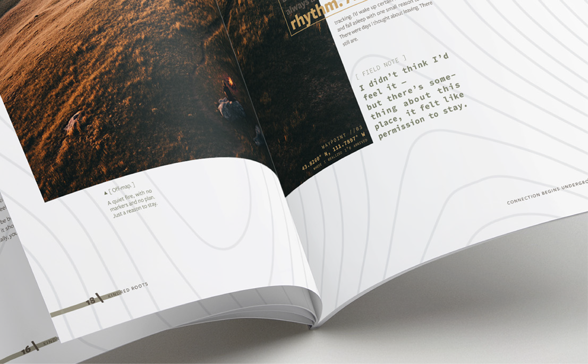
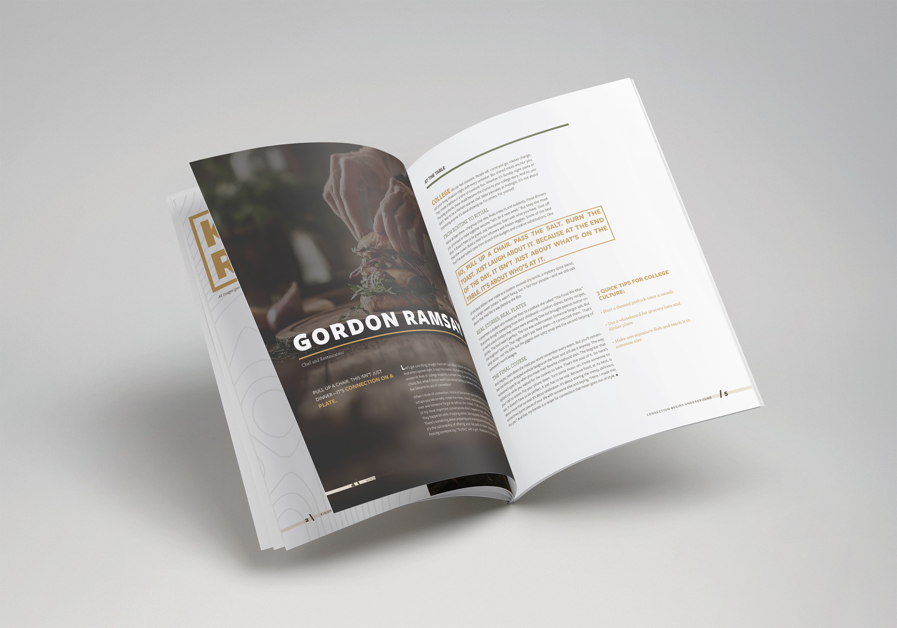
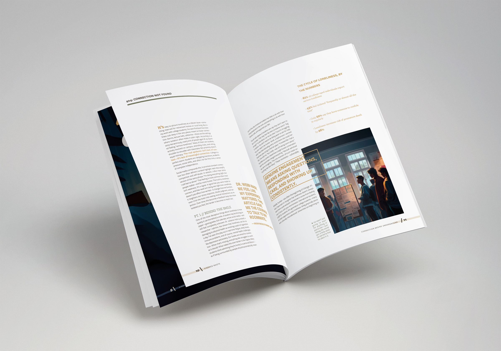
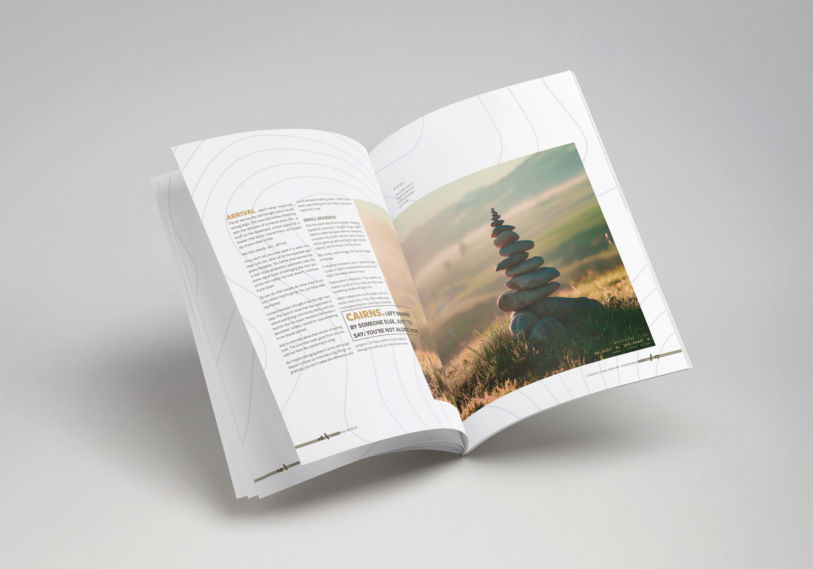

Kindred Roots is an exploration of community, belonging, and the spaces between people. This project centered on crafting an intentional editorial layout that balances bold display type with spacious, reflective reading spreads.
Multi-article publications require visual variety without losing structural harmony. The goal was to establish a clear grid system, warm earthy tones, and typographic pacing that gives each narrative article its own distinct atmosphere.


Letter From
The Editor
A balanced combination of typography, portraiture, and ample whitespace that creates an inviting, grounded introduction to the publication.

404: Connection
Not Found
Uses digital error syntax and moody, nocturnal illustration to highlight the growing emotional disconnect between screen habits and human interaction.

Un-Mapped
Feature
Full-bleed aerial photography paired with prominent geometric title framing and topographical line accents to evoke quiet exploration.




